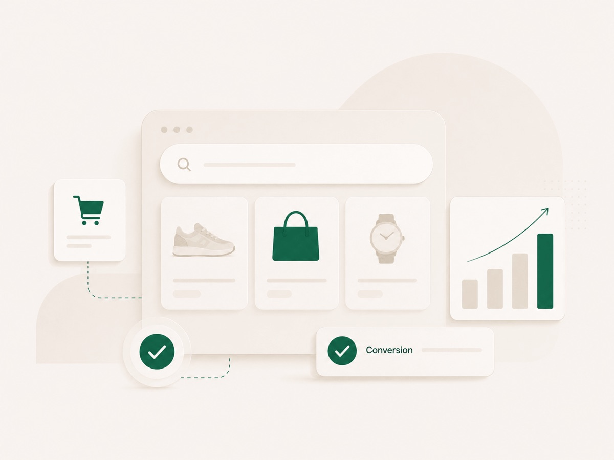

Google Ads za e-commerce: šta treba postaviti prije pokretanja kampanja

Meta je naš primarni kanal, na kojem smo upravljali oglasnim budžetom većim od €50M za e-commerce brendove. Ali za većinu shopova dođe trenutak kada oslanjanje na samo jedan kanal postane ograničenje. Ljudi vide proizvod na Instagramu, a zatim ga potraže na Googleu. Ako te nema kada pretražuju, tu je neko drugi.
Dobra vijest je da Google Ads za e-commerce nije misterija. Loša je da većina računa koje preuzmemo potroši dio budžeta na stvarima koje su se mogle postaviti kako treba prije prvog klika. Evo kroz šta prolazimo prije nego što pustimo ijednu kampanju.
1. Kada Google Ads ima smisla
Google Search i Shopping prvenstveno hvataju potražnju i namjeru kupovine koja već postoji. Zato najlakše daju rezultat kada shop već prodaje preko Meta oglasa, organskih kanala ili marketplaceova, kada postoji pretraga za proizvod ili kategoriju i kada marža može podnijeti realnu cijenu akvizicije.
Google ipak nije samo kanal za postojeću potražnju. Performance Max, YouTube i Demand Gen mogu dosegnuti korisnike i prije nego što aktivno traže proizvod. Ipak, za većinu e-commerce shopova najbrži početni potencijal dolazi iz kvalitetno postavljenog Search i Shopping ekosistema.
Uz to, shop mora biti tehnički spreman: spora stranica i komplikovan checkout rasipaju plaćeni saobraćaj prije nego što kampanja išta dokaže. Kada se osnove poslože, Google često postaje logičan drugi kanal koji dopunjuje Metu i hvata korisnike bliže odluci o kupovini.
2. Kada ga još ne treba pokretati
Google nije automatski pravi prvi kanal za svaki novi shop. Ako prodaješ impulsni proizvod koji korisnici još ne poznaju i gotovo ga niko ne pretražuje, Meta će najčešće biti bolji kanal za potvrdu ponude i stvaranje početne potražnje.
S druge strane, ako ljudi već aktivno traže proizvod, kategoriju ili problem koji rješavaš, Search i Shopping mogu imati smisla i od prvog dana.
Google još ne treba pokretati kada marža ne može podnijeti realan trošak akvizicije, tracking nije pouzdan ili shop ima očigledne tehničke i konverzijske probleme. Kampanja koja matematički ne može biti profitabilna neće postati profitabilna samo zahvaljujući boljoj optimizaciji.
3. Merchant Center i product feed
Shopping i Performance Max kampanje žive od product feeda. Prije starta provjeravamo:
- povezan Merchant Center i potvrđeno vlasništvo nad domenom
- aktivne probleme sa računom i odbijene proizvode
- naslove koji sadrže informacije koje kupci stvarno traže
- ispravne cijene, dostupnost, varijante i dostavu
- validne GTIN, brand i MPN podatke tamo gdje postoje
- automatsku i pouzdanu sinhronizaciju zaliha i cijena
Loš ili nepotpun feed jedan je od najčešćih razloga zbog kojih Shopping i Performance Max ne mogu pokazati puni potencijal. Google može kvalitetno oglašavati samo ono što mu ispravno opišeš.
4. Tracking i vrijednost konverzija
Povezivanje GA4 i Google Ads računa je početak, ne kraj. Ključno je da Google Ads pouzdano prima Purchase konverziju sa stvarnom vrijednošću narudžbe, valutom i jedinstvenim transaction ID-em.
Dinamička vrijednost omogućava optimizaciju prema prihodu, a transaction ID sprečava da se ista narudžba više puta evidentira nakon ponovnog učitavanja thank-you stranice.
Enhanced Conversions, consent mode i server-side tagging uvodimo tamo gdje donose mjerljivu vrijednost i gdje su pravilno tehnički i pravno implementirani.
Pravilo je jednostavno: dok mjerenju ne vjeruješ, ne troši ozbiljan budžet. Sve poslije toga stoji ili pada na kvalitetu podataka koje šalješ platformi.
5. Brand Search, non-brand Search i PMax
Brand Search obično ostvaruje nizak CPA jer hvata korisnike koji već poznaju brend. Zato ga držimo odvojeno, kako ne bi uljepšavao rezultat kampanja čiji je zadatak pronalazak novih kupaca. Non-brand Search je mjesto gdje se osvaja nova potražnja; kreni od upita najbližih kupovini.
Performance Max može biti snažan uz kvalitetan feed proizvoda i pouzdane vrijednosti konverzija, ali nije crna kutija koju treba pustiti bez kontrole. Po potrebi vlastiti brend izdvajamo kroz brand exclusions, analiziramo search terms izvještaj i pratimo rezultate po kanalima i grupama proizvoda.
Koja kombinacija kampanja ulazi u početno postavljanje zavisi od budžeta, broja proizvoda i volumena pretrage; ne mora svaki shop krenuti sa sve tri. Strukturu gradimo prema maržama, potražnji, bestselerima i raspoloživom budžetu, ne prema preporukama koje se automatski pojavljuju u interfejsu.
6. Koliki budžet je potreban
Ne postoji univerzalna cifra, ali postoji princip: budžet mora moći skupiti dovoljno klikova i konverzija da se iz njih nešto zaključi. Računaj unazad od cijene klika u svojoj niši i konverzije svog shopa.
Primjer: ako očekivani CPA iznosi 20 €, budžet od 1.000 € odgovarao bi približno 50 kupovina, pod uslovom da kampanje zaista ostvare taj CPA. U praksi dio budžeta odlazi na testove koji neće dati rezultat, pa stvarni broj može biti manji. Podijeliš li taj budžet na pet kampanja, svaka dobija oko 200 €, odnosno prostor za desetak kupovina mjesečno; u takvoj situaciji često je bolje koncentrisati budžet na jednu ili dvije najvažnije kampanje.
To nije Googleovo magično pravilo o minimalnom broju konverzija, nego jednostavno pitanje količine podataka iz koje se može nešto zaključiti. Zato u prijavi za audit pitamo koliko trenutno ulažeš ili planiraš ulagati.
7. Šta pratiti tokom prvih 30 dana
Prvih sedmica potvrdi da se konverzije i vrijednosti bilježe ispravno, upoređujući ih sa stvarnim narudžbama u shopu. Zatim redovno prati:
- search terms izvještaj, uz negativne ključne riječi za jasno nerelevantne upite i brand exclusions kada brend saobraćaj vodimo odvojeno
- udio potrošnje po kanalima unutar PMaxa i koliko konverzija dolazi od upita koji sadrže naziv brenda
- rezultate po proizvodu ili grupi proizvoda
- dijagnostiku feeda i odbijene proizvode
- CPA i vrijednost konverzija po kampanji, a kroz shop ili objedinjeni reporting i stvarni doprinos profitu po narudžbi
Cilj prvih 30 dana nije savršen ROAS, nego pouzdano mjerenje i jasan odgovor na pitanje šta treba povećati, promijeniti ili ugasiti. Kako to izgleda kad se posloži, pogledaj naše rezultate.
8. Najčešće greške
- Pokretanje kampanja bez praćenja vrijednosti konverzija.
- Purchase conversion action nije postavljena kao Primary ili kampanja ne optimizuje prema Purchase cilju.
- Ista kupovina ulazi u bidding kroz više conversion actiona, bez jasne podjele na Primary i Secondary (npr. direktni Google Ads tracking i GA4 import iste narudžbe).
- PMax bez jasne odluke kako tretirati brend saobraćaj i bez razumijevanja koliko konverzija dolazi od upita koji sadrže naziv brenda.
- Consent banner postoji, ali consent mode ne radi pravilno.
- Odluke poslije tri dana umjesto poslije dovoljno podataka.
- Slijepo prihvatanje Googleovih "preporuka" i auto-apply opcija.
- Zaboravljen feed: cijene i zalihe koje se ne sinhronizuju sa shopom.
9. Kako izgleda naš početni paket
Sve navedeno je tačno ono što radimo u početnom paketu fiksnog obima:
- Postavljanje računa i feeda: Google Ads račun strukturiran prema budžetu i asortimanu, povezan Merchant Center i feed proizvoda bez kritičnih grešaka i odbijenih proizvoda.
- Tracking kojem možeš vjerovati: povezani GA4 i Google Ads, uz pouzdano praćenje kupovina, vrijednosti narudžbi, valute i transaction ID-a.
- Prve aktivne kampanje: kombinacija kampanja koja odgovara stvarnoj potražnji, budžetu i asortimanu; najčešće brand Search, high-intent non-brand Search i/ili Performance Max.
- 30 dana optimizacije: redovno praćenje, planske sedmične optimizacije i završni izvještaj jasnim jezikom: šta je radilo, šta nije i šta preporučujemo dalje.
Paket je namijenjen početnom postavljanju i validaciji Google Ads kanala. Kontinuirano vođenje nakon prvih 30 dana, napredne feed optimizacije, dizajn landing stranica i produkcija novih kreativa dogovaraju se odvojeno.
Razmišljaš o pokretanju Google Ads kampanja?
Pregledaćemo shop, tracking, feed proizvoda i trenutne kanale prodaje kako bismo procijenili je li Google Ads pravi sljedeći korak i kakvo početno postavljanje ima smisla za tvoj budžet.
U prijavi spomeni "Google Ads starter". Ako postoji dobar fit, dobijaš jasan prijedlog obima projekta, cijenu i rokove prije početka.